Chapter 1 Insect indicators
Author and date: Jens Åström
Sys.Date()## [1] "2023-07-05"#Notes on this draft Most things are done but it’s still a rough draft. I plan to finish it in august. But you could see where it’s headed so raise the alarm if I’m off course.
Incomplete list of things that will change:
- Fill in sections that lack text.
- Upgrade genetic diversity calculation. The current calculation is just a placeholder, awaiting some new data from Marie.
- Packaging of R-package versions for reproducibility? Or just point to a version on Github..
- Make bombLepiSurv public. After touch-up and fixes of github issues.
- Fix any comments in this draft inside hard brackets.
- Write something about the choice of each indicator.
| Ecosystem | Økologisk egenskap | ECT class |
|---|---|---|
| Semi-naturlig mark | Biologisk mangfold, Funksjonelle grupper innen trofiske nivåer, Funksjonelt viktige arter og biofysiske strukturer | Functional state characteristics |
| Semi-naturlig mark | Biologisk mangfold, Funksjonelle grupper innen trofiske nivåer, Funksjonelt viktige arter og biofysiske strukturer | Functional state characteristics |
| Semi-naturlig mark | Biologisk mangfold, Funksjonelle grupper innen trofiske nivåer, Funksjonelt viktige arter og biofysiske strukturer | Functional state characteristics |
1.1 Introduction
We here show how to calculate a set of indicators for terrestrial insects in Norway. Two of them are adapted from earlier work on the Nature Index for Norway and use data from the Norwegian monitoring program on bumblebees and butterflies (NMBB). The others are developed during 2023, and use data from the Norwegian insect monitoring program (NorIns).
This workflow is shortened by putting most of the underlying code in separate R-packages, which are freely available through Github. The relevant packages are bombLepiSurv https://github.com/jenast/bombLepiSurv for the bumblebee and butterfly indicators (Not public yet), and Norimon https://github.com/jenast/Norimon for the rest of the indicators.
For the indicators from the NMBB program, community reference values has been elicitated from experts, and is explained further below. For the indicators from the NorIns program, this is significantly harder to do, because of the size of the communities, lack of historical timeseries and changes in sampling and identification techniques. We therefore currently lack reference values for many of these indicators.
Below is a list of the indicators calculated in this document, and their state of development. Some details is further expanded on below.
| Dataset | Indicator | Current geographical scope | Indicator data | Reference values |
|---|---|---|---|---|
| NMBB | Bumblebees in semi-natural grasslands | Sørlandet, Østfold-Vestfold, Vestlandet, Trøndelag | Present | Present |
| NMBB | Butterflies in semi-natural grasslands | Sørlandet, Østfold-Vestfold, Vestlandet, Trøndelag | Present | Present |
| NorIns | Biomass of flying insects | Sørlandet, Østlandet, Trøndelag, Nord-Norge | Present | Lacking |
| NorIns | Species richness of flying insects | Sørlandet, Østlandet, Trøndelag, Nord-Norge | Present | Lacking |
| NorIns | Species richness of pollinators | Sørlandet, Østlandet, Trøndelag, Nord-Norge | Present | Lacking |
| NorIns | Species richness of X | Sørlandet, Østlandet, Trøndelag, Nord-Norge | Present | Lacking |
| NorIns | Species richness Apocrita / Symphyta | Sørlandet, Østlandet, Trøndelag, Nord-Norge | Present | Lacking |
| NorIns | Intraspesific genetic variation | Sørlandet, Østlandet, Trøndelag, Nord-Norge | Present | Lacking |
[Add short motivation for each indicator]
1.2 About the underlying data
1.2.1 Representativity in time and space
1.2.2 Original units
1.2.3 Temporal coverage
1.2.4 Aditional comments about the dataset
1.3 Ecosystem characteristic
1.3.1 Norwegian standard
1.4 Collinearities with other indicators
None measured so far, but it is reasonable to assume that some of these indicators will share some causal relationships with eachother, and therefore correlate to some degree. This could potentially happen with some other indicators not described here.
1.5 Reference state and values
Assessing the state of insect communities can be a complicated task, due to their taxonomic and functional breadth and high temporal and spatial variability. Still, the most complicated part for an indicator is to establishing reference values, when the reference states are lacking or prohibitively difficult to measure empirically. We currently lack reference values for all indicators from the NorIns program. It is unlikely that this can be solved “simply” by surveying a state in a reference area, since intact reference areas of sufficient size and numbers likely don’t exist. The question of how to handle these reference values is currently unresolved, and we present these indicator value calculations with made up reference values as placeholders in the code.
1.5.1 Reference state
1.5.2 Reference values, thresholds for defining good ecological condition, minimum and/or maximum values
1.6 Uncertainties
The uncertainties for the indicator values is calculated by bootstrapping the average values for each locality within a year. This takes the variability between the localities into account.
1.7 References
Åström, Jens; Birkemoe, Tone; Brandsegg, Hege; Dahle, Sondre; Davey, Marie Louise; Ekrem, Torbjørn; Fossøy, Frode; Hanssen, Oddvar; Laugsand, Arne Endre; Majaneva, Markus; Staverløkk, Arnstein; Sverdrup-Thygeson, Anne; Ødegaard, Frode. Insektovervåking på Østlandet, Sørlandet og i Trøndelag. Rapport fra feltsesong 2022. Trondheim: Norsk institutt for naturforskning (NINA) 2023 (ISBN 978‐82‐426‐5037‐5) 99 s. NINA rapport(2241)
Åström, Sandra Charlotte Helene; Åström, Jens; Bøhn, Kristoffer; Gjershaug, Jan Ove; Staverløkk, Arnstein; Dahle, Sondre; Ødegaard, Frode. Nasjonal overvåking av dagsommerfugler og humler i Norge. Oppsummering av aktiviteten i 2022. Trondheim: Norsk institutt for naturforskning (NINA) 2023 (ISBN 978-82-426-5009-2) 54 s. NINA rapport(2214)
Connor M French, Laura D Bertola, Ana C Carnaval, Evan P Economo, Jamie M Kass, David J Lohman, Katharine A Marske, Rudolf Meier, Isaac Overcast, Andrew J. Rominger, Phillip Staniczenko, Michael J Hickerson. 2023. Global determinants of insect mitochondrial genetic diversity. https://doi.org/10.1101/2022.02.09.479762
1.8 Analyses
1.8.1 Calculation principles for NorIns indicators
The indicators from the Norwegian insect monitoring are calculated with functions in the Norimon package. This method is meant to capture a broad variety of insect indicators using data from NorIns.
Main steps of workflow:
- Fetch data of biomass or community diversity from a centralized database (or GBIF). Diversity data can be subsetted on several taxonomic levels, but biomass is only available for whole samples.
- Bootstrap observations and calculate mean and uncertainty of point estimates.
- Compare observations to reference points.
- Display and plot the results

Most of the ecology comes into step 1, in choosing what data to use to describe a quality. This can be a custom selection of species, or a set of higher taxa such as specific genuses, families or an order. The goal is to choose a set of taxa that represent specific qualities of the community that can indicate the ecological status of the ecosystem. In addition to the selection of taxa, we have to decide on the level of aggregation, e.g. if we should aggregate the data on the region scale, locality scale, or even the individual sample occasion scale. For ecological indicators, we will aggregate the values to a year locality scale, where the variables summarises all catches in a locality in a year.
The second step is to get an estimate of the uncertainty of the data, were we use the bootstrap method. This method is flexible, as we could bootstrap the samples on different sampling levels (samples within localities, regions within country). For the insect indicators, we will bootstrap and summarize the variables to regional values, for example expressing the mean values of insect biomass in Trøndelag in 2021, with uncertainty.
Ecological knowledge also comes into step 3, comparing the values to a reference state. Here we have several options. We could for example use a single defined value as the reference state. But we can also use a point in time as a reference point (e.g. the start of a time series).
Taken together, this framework is meant to facilitate the calculation of an arbitrary set of insect indicators, based on the combination of choices in data to fetch, aggregation level, and reference comparison. We can work through an example with pollinators, to showcase the framework.
In the example, we start with connecting to the database in order to fetch the data.
connect_to_insect_db()For convenience, the pollinator families can be retreived by the get_pollinators() function.
pollinators <- get_pollinators()
pollinators_fam <- pollinators %>%
select(family_latin) %>%
pull()| family_norwegian | family_latin |
|---|---|
| Gravebier | Andrenidae |
| Langtungbebier | Apidae |
| Korttungebier | Colletidae |
| Markbier | Halictidae |
| Buksamlerbier | Megachilidae |
| Blomsterbier | Melittidae |
| Blomfluer | Syrphidae |
| Smygere | Hesperiidae |
| Glansvinger | Lycaenidae |
| Nymfevinger | Nymphalidae |
| Svalestjerter | Papilionidae |
| Hvitvinger | Pieridae |
| Metallmerker (uoffisiell) | Riodinidae |
We then fetch the community data for these families through the get_observations function. We additionally subset the habitat type that we are interested in, here semi-natural land. The result is a tibble of the aggregated number of species, shannon diversity, and the mean number of genetic variants per species. The default aggregation level is “year_locality”, meaning the total observations for a locality within a year. [The output currently contains some experimental values. Shannon diversity doesn’t really make sense without counts/amounts, etc…]
poll_loc_year <- get_observations(subset_families = pollinators_fam,
subset_habitat = "Semi-nat")| year | locality | habitat_type | region_name | no_species | shannon_div | mean_asv_per_species | GDE_by_asv |
|---|---|---|---|---|---|---|---|
| 2020 | Semi-nat_01 | Semi-nat | Østlandet | 98 | 49.47 | 2.68 | 0.50 |
| 2020 | Semi-nat_02 | Semi-nat | Østlandet | 34 | 28.64 | 1.44 | 0.84 |
| 2020 | Semi-nat_03 | Semi-nat | Østlandet | 40 | 34.07 | 1.57 | 0.85 |
| 2020 | Semi-nat_04 | Semi-nat | Østlandet | 56 | 42.90 | 1.89 | 0.77 |
| 2020 | Semi-nat_05 | Semi-nat | Østlandet | 78 | 52.19 | 1.90 | 0.67 |
1.8.1.1 Bootstrap observations
The localities in the NorIns program are (semi-)randomly selected and can be viewed as samples of a larger population. Individually, they represent a single measurement of an insect community in a habitat type in a region. To get the sampling uncertainty for this representation, we can bootstrap the values by this simple prosess: we choose a random set of localities within a year and region (with replacement) and calculate the average values. We then repeat this process a large number of times to get a bootstrap sample of values, which can be used to express the uncertainty in the dataset.
We typically have 10 localities for a given habitat type and region each year, which is not very much to base our uncertainty estimates on. But bootstrapping works fairly well on small samples and has the advantage that is doesn’t make assumptions of the statistical distribution of the errors. Note that once we get a larger dataset with repeating surveys every 5 years, it probably makes sense to do some kind of parametric (hierarcichal) modelling of the values instead of this simple bootstrap.
When NorIns is fully scaled up, it will have 50 localities for each covered habitat type in every country region, with 10 localities every year, in a rotating survey scheme over 5 years. Since the program is rolled out sequentially starting in 2020, for semi-natural land it currently covers 4/5 of the country, with varying amounts of localities within each region. The map below displays the localities surveyed so far.
semi_loc <- get_localities(dataset = "NasIns",
habitat_type = "Semi-nat")
norway_regions <- get_map()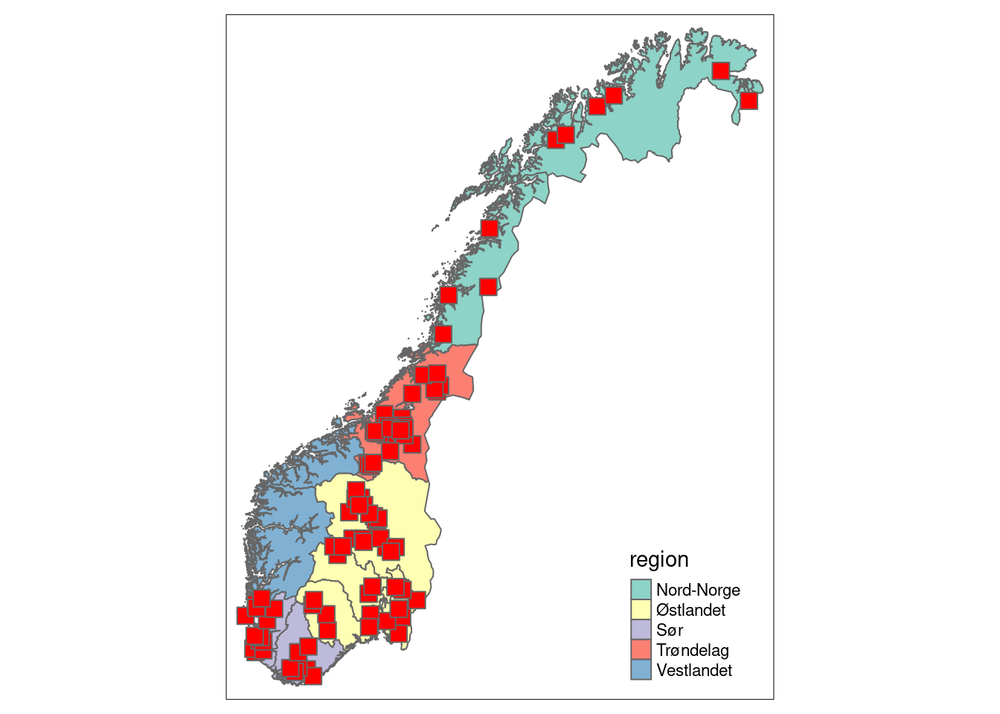
The bootstrap routine is implemented in the function bootstrap_value(), which takes a community (from get_observation) or weight dataset (from get_biomass) as its first input. It also needs to know what measurement in the dataset to bootstrap, and what, if any, grouping structure to aggregate the results on. In this example, we bootstrap the number of pollinator species, and aggregate the results on the year and regional scale.
poll_richness_boot <- bootstrap_value(poll_loc_year,
value = no_species,
groups = c("year",
"region_name")
)This creates an object of type boot_stat. Calling it prints a simple summary of the bootstrap values.
poll_richness_boot## # A tibble: 6 × 6
## year region_name no_species boot_sd boot_lower2.5 boot_upper97.5
## <int> <chr> <dbl> <dbl> <dbl> <dbl>
## 1 2020 Østlandet 60.9 5.99 49.4 72.4
## 2 2021 Trøndelag 42.0 3.04 35.6 47.5
## 3 2021 Østlandet 53.7 5.86 41.8 64.8
## 4 2022 Sørlandet 29.4 5.56 18.5 40.4
## 5 2022 Trøndelag 34.7 2.57 30.1 40
## 6 2022 Østlandet 36.0 2.83 30.4 41.5But the boot_stat object also stores the individual bootstrap values for later computation. [Why is is only 5 994 rows? Fix/figure out]
poll_richness_boot[2]## $bootstrap_values
## # A tibble: 5,994 × 3
## # Groups: year, region_name [6]
## year region_name boot_values
## <int> <chr> <dbl>
## 1 2020 Østlandet 51.4
## 2 2020 Østlandet 69.4
## 3 2020 Østlandet 62
## 4 2020 Østlandet 58.3
## 5 2020 Østlandet 54.6
## 6 2020 Østlandet 55.2
## 7 2020 Østlandet 66.6
## 8 2020 Østlandet 60.7
## 9 2020 Østlandet 56.9
## 10 2020 Østlandet 57.5
## # … with 5,984 more rows1.8.1.2 Comparing bootstrap values to a reference point
Setting aside the difficulties in establishing robust reference values, the next step is to compare the observed values (with bootstrapped uncertainty) to the chosen reference value. This can be made in several ways. Most simply, if we have a single numeric value as a reference value, we can simply subtract that from the observed values. For example, if we observe 13 species of pollinators in 2022 at a location, and the reference point is 10, the 2022 has increased by 13 - 10 = 3 species. Such subtractions should be made on the set of bootstrapped values, and new summary statistics calculated, preserving the uncertainty from the bootstrap. The boot_stat has its own subtraction method do to just that. In this example, we set the reference value arbitrarily to 30 species.
poll_richness_boot## # A tibble: 6 × 6
## year region_name no_species boot_sd boot_lower2.5 boot_upper97.5
## <int> <chr> <dbl> <dbl> <dbl> <dbl>
## 1 2020 Østlandet 60.9 5.99 49.4 72.4
## 2 2021 Trøndelag 42.0 3.04 35.6 47.5
## 3 2021 Østlandet 53.7 5.86 41.8 64.8
## 4 2022 Sørlandet 29.4 5.56 18.5 40.4
## 5 2022 Trøndelag 34.7 2.57 30.1 40
## 6 2022 Østlandet 36.0 2.83 30.4 41.5diff_poll_richness_boot <- poll_richness_boot - 30diff_poll_richness_boot## # A tibble: 6 × 6
## year region_name no_species boot_sd boot_lower2.5 boot_upper97.5
## <int> <chr> <dbl> <dbl> <dbl> <dbl>
## 1 2020 Østlandet 30.9 5.99 19.4 42.4
## 2 2021 Trøndelag 12.0 3.04 5.6 17.5
## 3 2021 Østlandet 23.7 5.86 11.8 34.8
## 4 2022 Sørlandet -0.633 5.56 -11.5 10.4
## 5 2022 Trøndelag 4.68 2.57 0.100 10
## 6 2022 Østlandet 5.95 2.83 0.400 11.5Alternatively, we could use a reference point in the time series itself. Say for example that we want to use the values for species richness of pollinators in semi-natural land i Østlandet 2020 as a reference point. We can then calculate the difference (the contrast) between this level and all the other levels. We do this by the function boot_contrast()
NB! This functionality is in development. It currently works for single rows as reference points, but needs updating to allow for referencing several values, e.g using the start values for all regions and habitat types as their own reference points.
diff_poll_richness_boot2 <- poll_richness_boot %>%
boot_contrast(year == 2020 & region_name == 'Østlandet')diff_poll_richness_boot2## # A tibble: 6 × 6
## year region_name no_species boot_sd boot_lower2.5 boot_upper97.5
## <int> <chr> <dbl> <dbl> <dbl> <dbl>
## 1 2020 Østlandet 0 0 0 0
## 2 2021 Trøndelag -18.9 6.65 -32.4 -5.6
## 3 2021 Østlandet -7.16 8.44 -24.3 9.1
## 4 2022 Sørlandet -31.5 8.14 -47.2 -15.3
## 5 2022 Trøndelag -26.2 6.41 -39.2 -13.6
## 6 2022 Østlandet -24.9 6.73 -38.1 -11.71.8.1.3 Normalizing the values
After the comparison to a reference value, we need to normalize the indicator values to lie between 0 and 1. This can be done in several ways (insert link to scaling chapter). The simplest case is to use a linear scaling, with a natural zero. This can be done by dividing the indicator values by the highest value state. A boot_stat object has a / function that divides each bootstap value by a given value, truncates the highest values to 1, and recalculates the summary values.
[Show this, but need to think on how to do this with difference values]
1.8.1.4 Display and plot bootstrap values
The boot_stat class also has its own plot function. It tries to plot a comparison of the bootstrap distributions over years, for each group. For example, if we plot the object diff_poll_richness_boot, we can look at the yearly differences in beetles species richness in the two geographic regions: (Note that we have only 1 year of data from Sørlandet so far)
plot(diff_poll_richness_boot)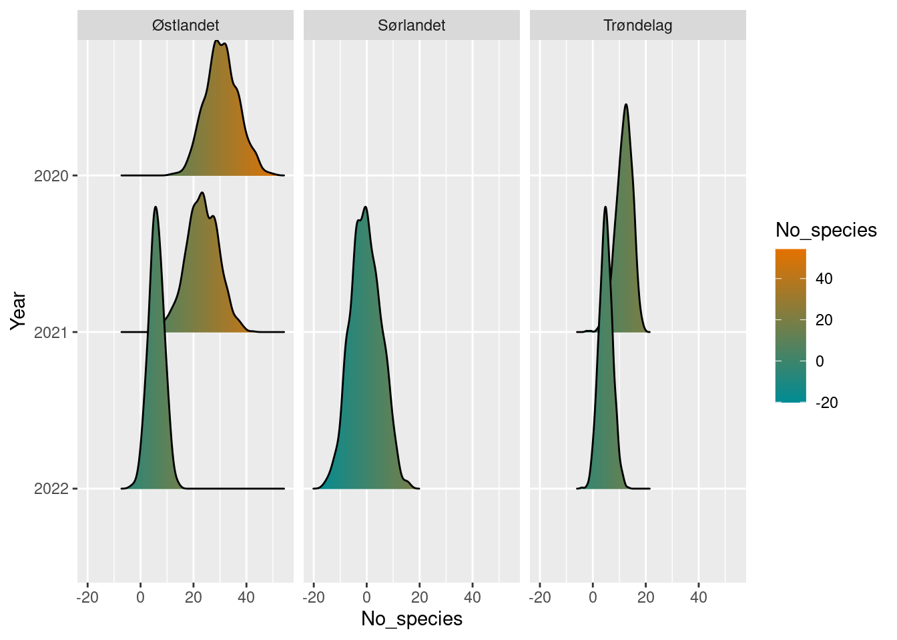
In the cases where we have used a single row as a reference point, this shows up as a sharp spike at 0.
plot(diff_poll_richness_boot2)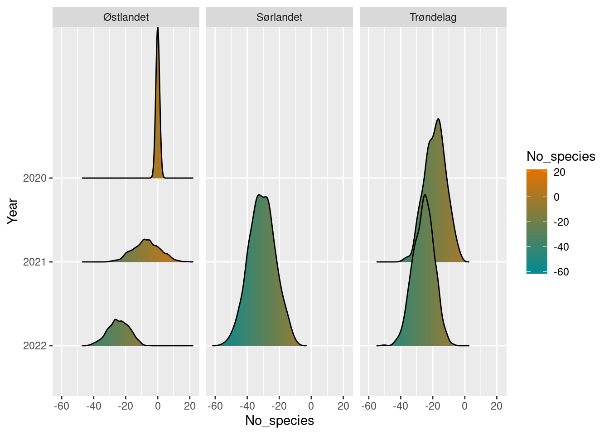
More plotting options are available, see the Norimon indicator workflow vignette.
1.8.1.5 Map plots
In addition to the density plots above, we can also display the values geographically, in a map. The map_plot() function takes a boot_stat object and plots the values according to its region names.
map_plot(poll_richness_boot)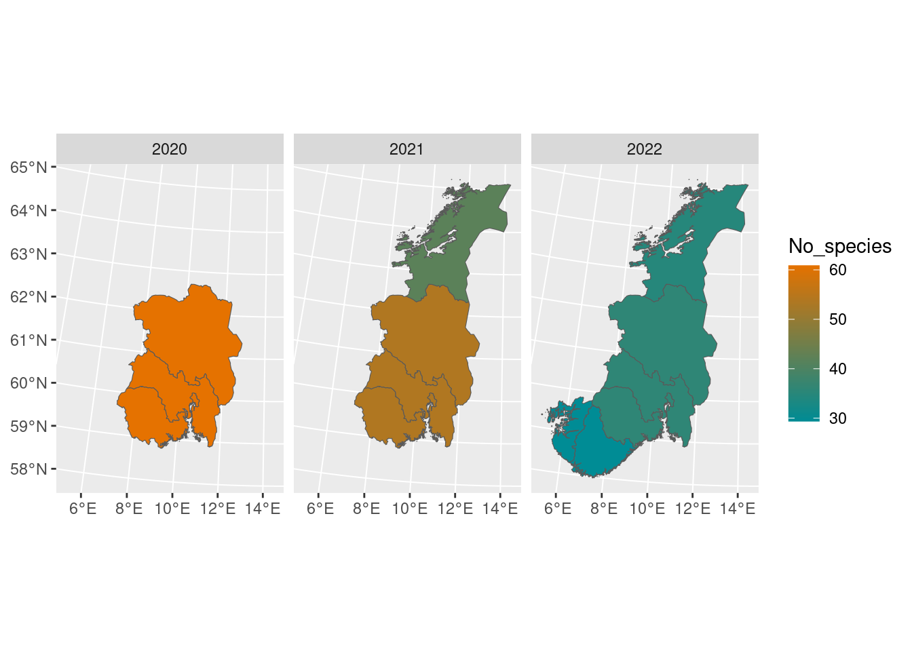
By default, it only shows the regions with data, but this can be overridden manually:
map_plot(poll_richness_boot,
whole_country = TRUE)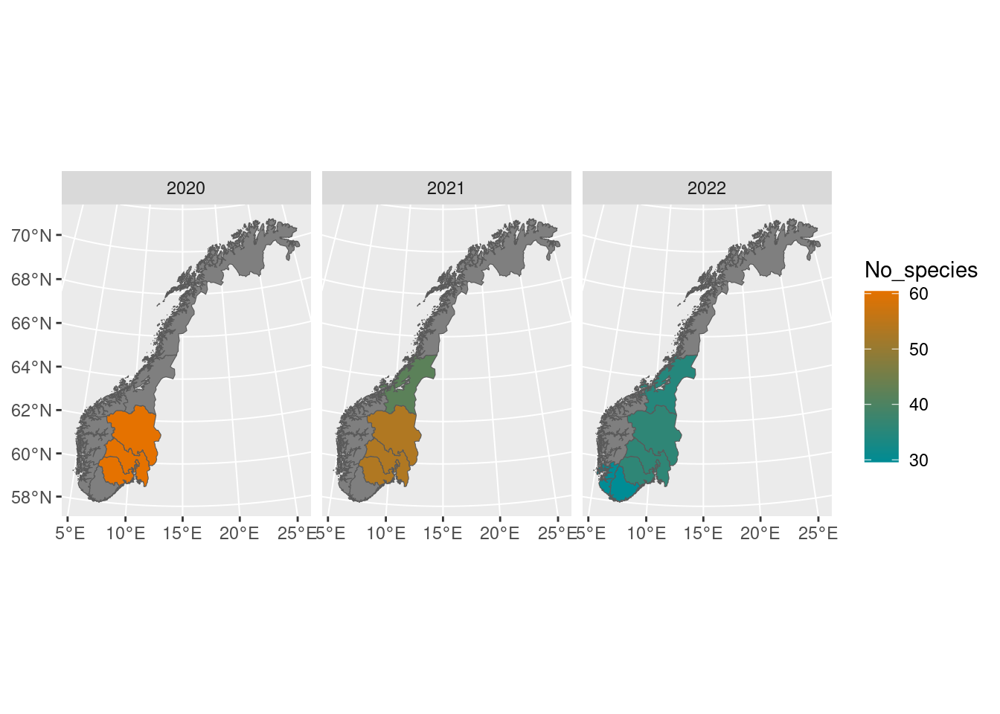
We can also choose a different palette, for example from the NinaR package, and visualize the uncertainty by setting the transparency of the colors from the bootstrap standard deviations. By the way, most of these functions can be piped as well:
diff_poll_richness_boot %>%
map_plot(palette = "orange-green",
whole_country = FALSE,
alpha_from_sd = TRUE)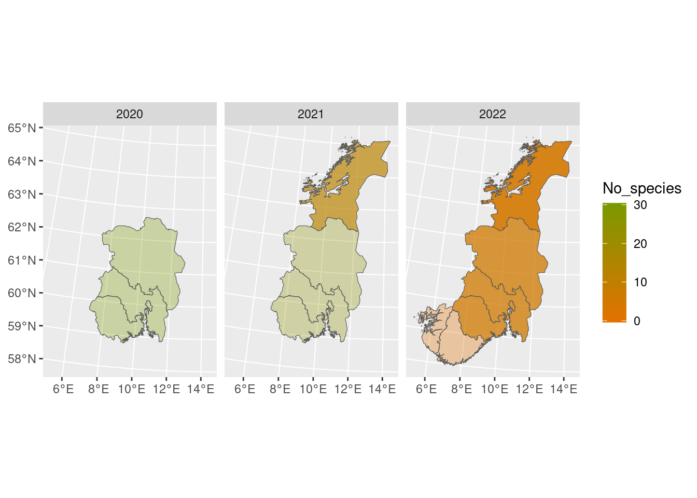
This concludes the tour of the Norimon functionality.
1.8.2 Calculation principles for NBBM indicators
These indicators were developed for the Nature Index of Norway, back in 2010 by Ola Diserud and Sandra Åström [ref], and is calculated routinely on a yearly basis [see xx for the most current report].
These indicators summarize the state of a bumblebee or butterfly community by estimating the difference from a reference community. Formally, the community indicator (CI) is expressed as the relative change of the community from a state of reference (SR), were the change is calculated by a state of change (ST).
\[CI = \frac{SR-SC}{SR}\] The state of reference (SR) represents a community of species that can be expected to be observed in a given habitat type and region. It is calculated by assigning each species to class of expected commonality; common (C), sporadic (S) and rare (R) species. This classification is done by expert opinion, informed by known present and past species distributions. This state of reference doesn’t contain all current possible species, only a subset of species, making up a historical reference community. Potential observations of “new” species therefore doesn’t inform the indicator value at all. Common species is expected to be observed in at least 5 % of the surveyed transects in a habitat type and region. Sporadic species similarly is defined as having a presence below 5 % but above 1 %. Rare species is seen in no more than 1 % of the transects, and lastly, species not seen in any transect is assumed as lost (L) for the purpose of this calculation.
Each commonality class gets it’s own weight, so that common species inform the reference state more than sporadic species, followed by rare species. The state of reference (SR) is thus a value, where each species adds to the state according to its commonality. Formally, it is defined as:
\[SR = n_C * w_{C, SR} + n_S * w_{S, SR} + n_R * w_{R, SR} = \sum_{i = (C, S, R)} n_i * w_{i, SR}, \] where \(n_i\) is the number of species in a commonality class (C, S, R), and the weights \([w_{C, SR}, w_{S, SR}, w_{R, SR}]\) specifies their respective contribution to the reference state (SR). The weights used is \([w_{C, SR}, w_{S, SR}, w_{R, SR}] = [1.0, 0.75, 0.50]\), i.e. a sporadic species has 75 % the weight of a common species, and a rare species has 50 % the weight of a common species.
The state of change (SC) is calculated as \[SC = n_{CS} * w_{CS} + n_{CR} * w_{CR} + n_{CL} * w_{CL} + n_{SR} * w_{SR} + n_{SL} * w_{SL} + n_{RL} * w_{RL}, \] where \(n_{CS}\) is the number of expected common species (C) that is observed sporadically (S), and \(w_{CS}\) is the weight of this change. Similarly, \(n_{CR}\) is the number of expected species that is observed rarely, \(n_{RL}\) is the number of rare species that is lost, and so on. Potential increases in observation rates does not inform the indicator. Changes for common species is weighted more heavily than changes for less common species, and larger decreases is weighted more heavily than smalle decreases, such that \([w_{CS}, w_{CR}, w_{CL}, w_{SR}, w_{SL}, w_{RL}]= [0.50, 0.75, 1.00, 0.50, 0.75, 0.50]\).
The indicator values are estimated with uncertainty, by bootstrapping the set of localities within a region, and calculating the indicator for each of 999 such samples.
1.8.2.1 Calculation example
These calculations with bootstrap sampling is implemented in the R-package bombLepiSurv (Bombus and Lepidoptera Survey). We briefly show this functionality with bumblebees in semi-natural lands as an example.
We connect to the internal database with a convenience function humlesommerfConnect
bombLepiSurv::humlesommerfConnect()We can fetch the all observations of bumblebees in semi-natural land with the getAllData function. Species names is here shown in Norwegian.
allBombusGrassland2022 <- getAllData(type = "bumblebees",
habitat = "gressmark",
year = 2022,
language = "norsk")A summary of the records is most easily plotted by surveyBarPlot
surveyBarplot(allBombusGrassland2022)
But for calculating the indicators, we only consider the transects that had were surveyed for the standard 3 times per year, to cover the phenology of the entire season. Complete data sets can be fetched by the function getComplData, which fetches data from one habitat type and region at a time.
bombus_trond_2022 <- getComplData(type = "Humler",
region_short = "Trond",
habitat = "Gressmark",
year = 2022)The observed relative to the expected occurrences can be visualized through the plotArt function. This requires a reference community, which can be fetched through the getExpValues function.
exp_bombus_trond <- getExpValues(type = "Humler",
region_short = "Trond",
habitat = "Gressmark"
) %>%
select(species = species_latin,
everything())Species in green bars are species that are expected to be common, and should reach the green areas in the plot. Similarly with the blue (sporadic species), and red (rare species). We see in this case that Bombus soroeensis is an exptected sporadic species that only were observed rarely.
plotArt(bombus_trond_2022,
exp_bombus_trond)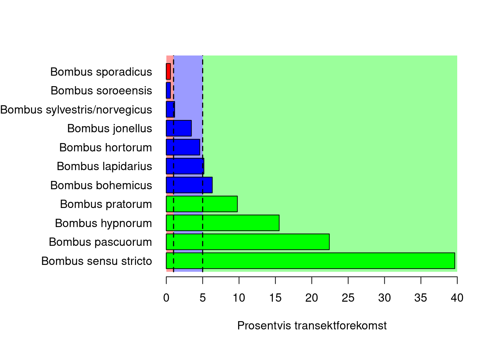 [add all species in exp to plot]
The actual calculation and bootstrapping is done in the function calcInd. This function calls the getComplData and getExpectedValues functions internally. It also requires the weights for the commonality classes in the reference community (SR), and the weights for the changes in state (CS). This is fetched internally via the functions getAmountWeights and getDiffWeights, respectively. Here the classes is in norwegian (v = common, m = sporadic, s = rare).
getDiffWeights()## v m s
## v 0.00 0.00 0.0
## m 0.50 0.00 0.0
## s 0.75 0.50 0.0
## t 1.00 0.75 0.5getAmountWeights()## v m s
## 1 1 0.75 0.5Lastly, we specify the number of samples for the bootstrap
nIter = 999hInd2022TrondGress <- calcInd(type = "Humler",
region_short = "Trond",
habitat = "Gressmark",
year = 2022,
nIter = nIter,
save.draws = T)The result [is going to be] an object of class [xxx]. Add print and plot methods…
Plotting functions for a series of indicator values is shown below in the indicator calculations.
1.8.3 Data sets
There are a few different ways to access the data required for these indicators. Both the NMBB and the NorIns project stores its data in an internal database at NINA. They both also export most of their data to GBIF, but those exports need to be restructured before they can be processed in the following scripts.
For the time being, we will here use some internal functions in the bombLepiSurv and Norimon packages to fetch the required data. [We may add a separate data fetching script later on, describing how to get this data externally in a stable way.]
1.8.3.1 NorIns data
The Norimon package has convenience functions to fetch data from the database, housed internally at NINA. This database is currently not available outside NINA, but we will implement a solution for this. Either we will make the database externally available, or we will provide an alternative route to the data from the GBIF export. For now, we will fetch the data through the Norimon functions.
1.8.3.2 NMBB data
The data for the bumblebee and butterfly indicators can be accessed through the R-package bombLepiSurv. [Replace this with the GBIF version?. At least make the package public.]
1.8.3.3 Regions
Importing a shape file with the regional delineation. The indicators associated with the NorIns project can be attributed to the 5 country regions of Norway. Currently however, the data program only covers 4 of the 5 regions.
connect_to_insect_db()
norway_regions <- Norimon::get_map()
norway_reg_NorIns <- norway_regions %>%
filter(region != "Vestlandet") %>%
select(region) %>%
group_by(region) %>%
summarize(geom = st_union(geom))tm_shape(norway_reg_NorIns) +
tm_polygons(col = "region") 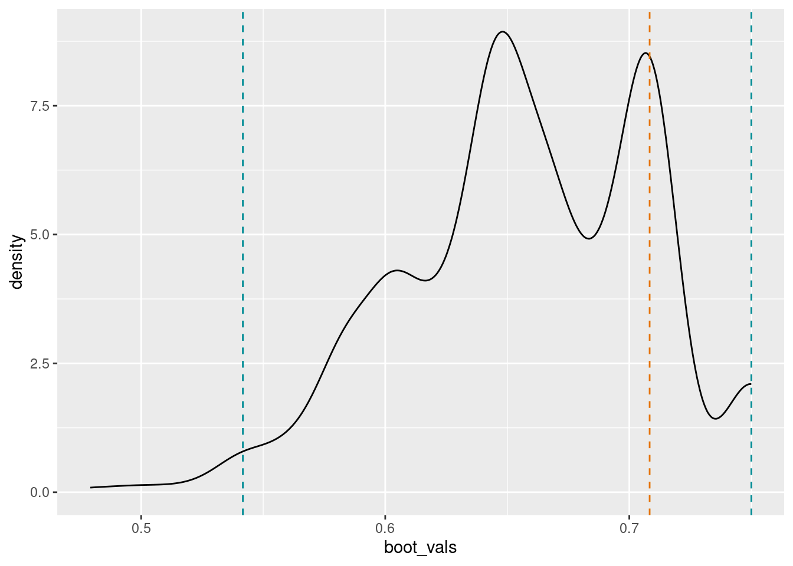
The indicators from the NMBB program is similary connected to regions, with the exception that the south-east region only covers the old fylke’s of Vestfold and Østfold, and that Nord-Norge isn’t covered yet. [Find the old fylke geometries and add this map to bombLepiSurv]
1.8.4 Calculation of NorIns indicators
1.8.4.1 Biomass of flying insects in semi-natural land
Fetch the data.
biomass_sn <- get_biomass(subset_year = 2020:2022,
subset_region = NULL)Calculate the indicator values for each region and year.
biomass_sn_boot <- bootstrap_value(df = biomass_sn,
value = avg_wet_weight,
groups = c("year",
"region_name")
)Compare values to a reference state. The reference state is here set uniformly for all regions, with a made up value just to be able to continue the calculations. Alternatively, we could calculate the indicator values for each region separately, compare to individual reference states, and then put it all together again.
We here use a single value as a reference state and normalize the values at the same time, using the / function.
biomass_ref <- 50
biomass_sn_diff <- biomass_sn_boot / biomass_refPlot the results and display uncertainty.
biomass_sn_diff## # A tibble: 6 × 6
## year region_name avg_wet_weight boot_sd boot_lower2.5 boot_upper97.5
## <int> <chr> <dbl> <dbl> <dbl> <dbl>
## 1 2020 Østlandet 0.671 0.0794 0.514 0.834
## 2 2021 Trøndelag 0.863 0.0988 0.651 1
## 3 2021 Østlandet 0.583 0.0743 0.437 0.735
## 4 2022 Sørlandet 0.469 0.0638 0.350 0.597
## 5 2022 Trøndelag 0.623 0.0686 0.494 0.768
## 6 2022 Østlandet 0.369 0.0440 0.285 0.459plot(biomass_sn_diff)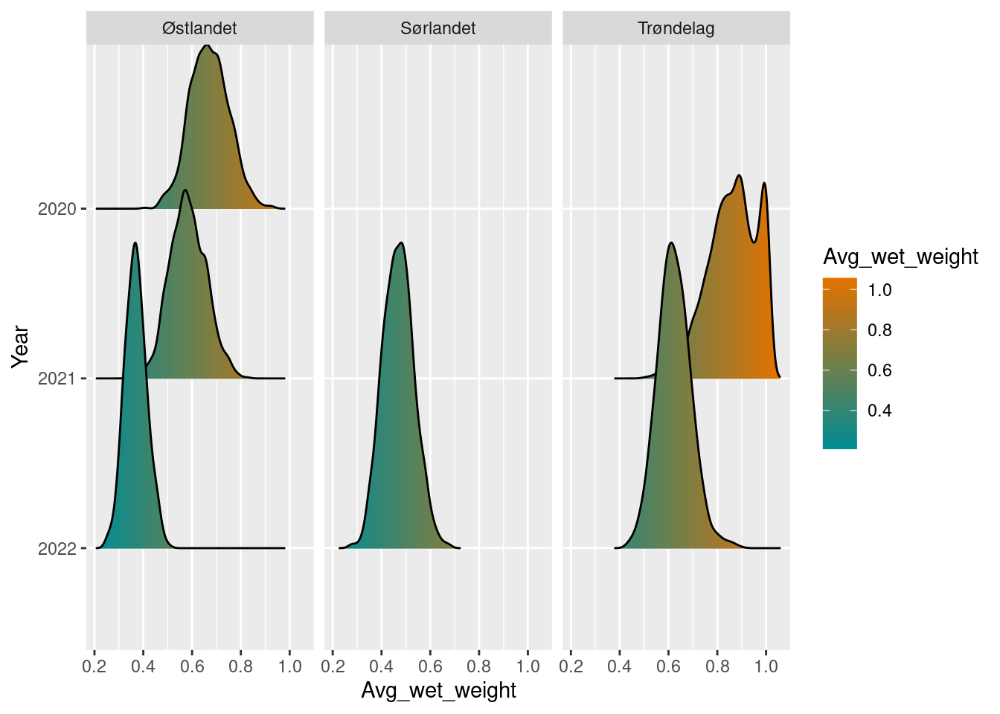
Prepare export format.
biomass_sn_to_exp <- biomass_sn_diff$bootstrap_summary
biomass_sn_to_exp <- biomass_sn_to_exp %>%
select(year,
region = region_name,
ind_value = boot_value,
ind_sd = boot_sd,
ind_lower2.5 = boot_lower2.5,
ind_upper97.5 = boot_upper97.5)
biomass_sn_to_exp <- norway_reg_NorIns %>%
inner_join(biomass_sn_to_exp,
by = c("region" = "region"),
multiple = "all")
biomass_sn_to_exp## Simple feature collection with 6 features and 6 fields
## Geometry type: MULTIPOLYGON
## Dimension: XY
## Bounding box: xmin: -76208 ymin: 6450245 xmax: 468357.5 ymax: 7237323
## Projected CRS: ETRS89 / UTM zone 33N
## # A tibble: 6 × 7
## region geom year ind_v…¹ ind_sd ind_l…² ind_u…³
## <chr> <MULTIPOLYGON [m]> <int> <dbl> <dbl> <dbl> <dbl>
## 1 Sørlandet (((-31605 6513854, -31464 6513743, -31449 6513590, -32255 6512745, -32512 6512740, -... 2022 0.469 0.0638 0.350 0.597
## 2 Trøndelag (((227783 7068646, 227876 7069284, 227998 7069292, 228247 7069134, 228869 7069030, 2... 2021 0.863 0.0988 0.651 1
## 3 Trøndelag (((227783 7068646, 227876 7069284, 227998 7069292, 228247 7069134, 228869 7069030, 2... 2022 0.623 0.0686 0.494 0.768
## 4 Østlandet (((179915 6537265, 180246 6536997, 180600 6536671, 181028 6536601, 181197 6536581, 1... 2020 0.671 0.0794 0.514 0.834
## 5 Østlandet (((179915 6537265, 180246 6536997, 180600 6536671, 181028 6536601, 181197 6536581, 1... 2021 0.583 0.0743 0.437 0.735
## 6 Østlandet (((179915 6537265, 180246 6536997, 180600 6536671, 181028 6536601, 181197 6536581, 1... 2022 0.369 0.0440 0.285 0.459
## # … with abbreviated variable names ¹ind_value, ²ind_lower2.5, ³ind_upper97.51.8.4.2 Species richness of flying insects in semi-natural land
Fetch the data.
richness_sn <- get_observations(subset_year = 2020:2022,
subset_region = NULL)Calculate the indicator values for each region and year.
richness_sn_boot <- bootstrap_value(df = richness_sn,
value = no_species,
groups = c("year",
"region_name")
)Compare to arbitrary reference value and normalize.
richness_ref <- 4000
richness_sn_diff <- richness_sn_boot / richness_refPlot the results and display uncertainty.
richness_sn_diff## # A tibble: 6 × 6
## year region_name no_species boot_sd boot_lower2.5 boot_upper97.5
## <int> <chr> <dbl> <dbl> <dbl> <dbl>
## 1 2020 Østlandet 0.518 0.0466 0.428 0.611
## 2 2021 Trøndelag 0.695 0.0447 0.594 0.771
## 3 2021 Østlandet 0.766 0.0435 0.682 0.851
## 4 2022 Sørlandet 0.544 0.0632 0.425 0.673
## 5 2022 Trøndelag 0.630 0.0296 0.575 0.687
## 6 2022 Østlandet 0.627 0.0198 0.588 0.668plot(richness_sn_diff)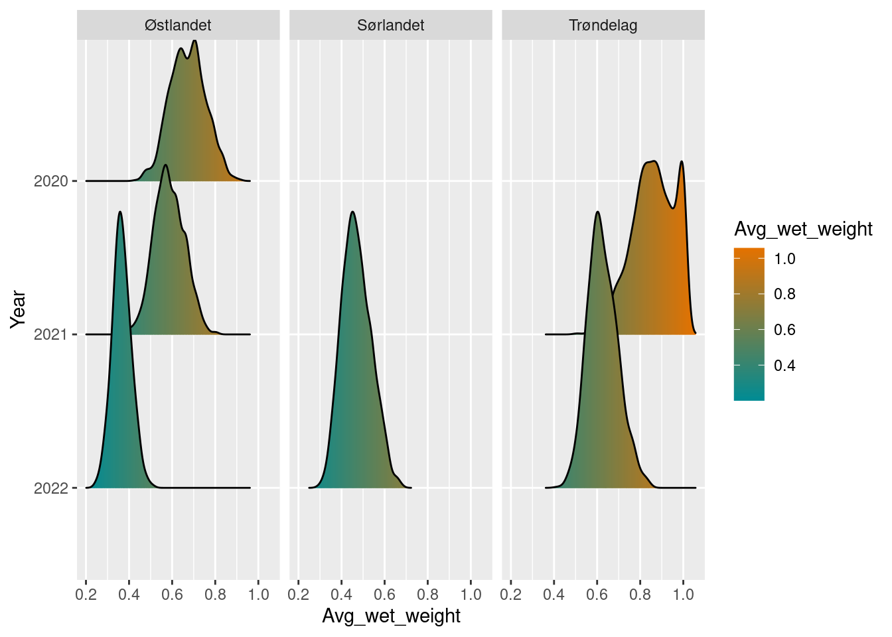
Prepare export format.
richness_sn_to_exp <- richness_sn_diff$bootstrap_summary
richness_sn_to_exp <- richness_sn_to_exp %>%
select(year,
region = region_name,
ind_value = boot_value,
ind_sd = boot_sd,
ind_lower2.5 = boot_lower2.5,
ind_upper97.5 = boot_upper97.5)
richness_sn_to_exp <- norway_reg_NorIns %>%
inner_join(richness_sn_to_exp,
by = c("region" = "region"),
multiple = "all")
richness_sn_to_exp## Simple feature collection with 6 features and 6 fields
## Geometry type: MULTIPOLYGON
## Dimension: XY
## Bounding box: xmin: -76208 ymin: 6450245 xmax: 468357.5 ymax: 7237323
## Projected CRS: ETRS89 / UTM zone 33N
## # A tibble: 6 × 7
## region geom year ind_v…¹ ind_sd ind_l…² ind_u…³
## <chr> <MULTIPOLYGON [m]> <int> <dbl> <dbl> <dbl> <dbl>
## 1 Sørlandet (((-31605 6513854, -31464 6513743, -31449 6513590, -32255 6512745, -32512 6512740, -... 2022 0.544 0.0632 0.425 0.673
## 2 Trøndelag (((227783 7068646, 227876 7069284, 227998 7069292, 228247 7069134, 228869 7069030, 2... 2021 0.695 0.0447 0.594 0.771
## 3 Trøndelag (((227783 7068646, 227876 7069284, 227998 7069292, 228247 7069134, 228869 7069030, 2... 2022 0.630 0.0296 0.575 0.687
## 4 Østlandet (((179915 6537265, 180246 6536997, 180600 6536671, 181028 6536601, 181197 6536581, 1... 2020 0.518 0.0466 0.428 0.611
## 5 Østlandet (((179915 6537265, 180246 6536997, 180600 6536671, 181028 6536601, 181197 6536581, 1... 2021 0.766 0.0435 0.682 0.851
## 6 Østlandet (((179915 6537265, 180246 6536997, 180600 6536671, 181028 6536601, 181197 6536581, 1... 2022 0.627 0.0198 0.588 0.668
## # … with abbreviated variable names ¹ind_value, ²ind_lower2.5, ³ind_upper97.51.8.4.3 Species richness of pollinators in semi-natural land
Fetch the data.
pollinator_fam <- get_pollinators() %>%
select(family_latin) %>%
pull()
pollinators_sn <- get_observations(subset_year = 2020:2022,
subset_families = pollinator_fam,
subset_region = NULL)Calculate the indicator values for each region and year.
pollinators_sn_boot <- bootstrap_value(df = pollinators_sn,
value = no_species,
groups = c("year",
"region_name")
)Compare to arbitrary reference value and normalize.
pollinators_ref <- 50
pollinators_sn_diff <- pollinators_sn_boot / pollinators_refPlot the results and display uncertainty.
pollinators_sn_diff## # A tibble: 6 × 6
## year region_name no_species boot_sd boot_lower2.5 boot_upper97.5
## <int> <chr> <dbl> <dbl> <dbl> <dbl>
## 1 2020 Østlandet 0.925 0.0736 0.751 1
## 2 2021 Trøndelag 0.839 0.0630 0.698 0.946
## 3 2021 Østlandet 0.910 0.0735 0.744 1
## 4 2022 Sørlandet 0.591 0.119 0.356 0.832
## 5 2022 Trøndelag 0.695 0.0510 0.6 0.8
## 6 2022 Østlandet 0.638 0.0547 0.532 0.743plot(pollinators_sn_diff)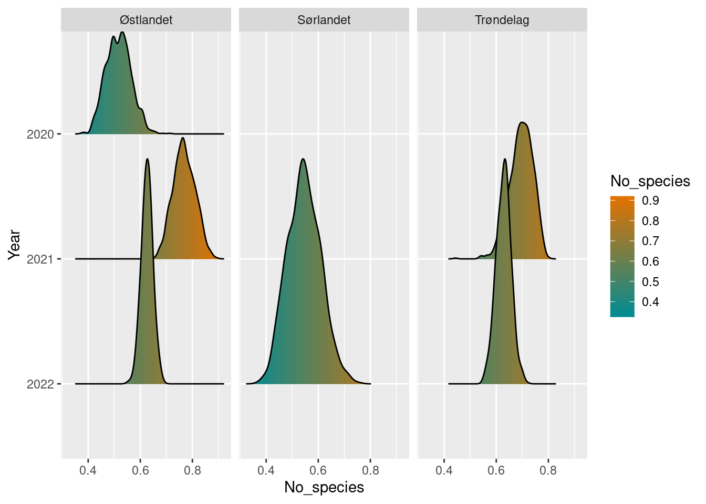
Prepare export format.
pollinators_sn_to_exp <- pollinators_sn_diff$bootstrap_summary
pollinators_sn_to_exp <- pollinators_sn_to_exp %>%
select(year,
region = region_name,
ind_value = boot_value,
ind_sd = boot_sd,
ind_lower2.5 = boot_lower2.5,
ind_upper97.5 = boot_upper97.5)
pollinators_sn_to_exp <- norway_reg_NorIns %>%
inner_join(pollinators_sn_to_exp,
by = c("region" = "region"),
multiple = "all")
pollinators_sn_to_exp## Simple feature collection with 6 features and 6 fields
## Geometry type: MULTIPOLYGON
## Dimension: XY
## Bounding box: xmin: -76208 ymin: 6450245 xmax: 468357.5 ymax: 7237323
## Projected CRS: ETRS89 / UTM zone 33N
## # A tibble: 6 × 7
## region geom year ind_v…¹ ind_sd ind_l…² ind_u…³
## <chr> <MULTIPOLYGON [m]> <int> <dbl> <dbl> <dbl> <dbl>
## 1 Sørlandet (((-31605 6513854, -31464 6513743, -31449 6513590, -32255 6512745, -32512 6512740, -... 2022 0.591 0.119 0.356 0.832
## 2 Trøndelag (((227783 7068646, 227876 7069284, 227998 7069292, 228247 7069134, 228869 7069030, 2... 2021 0.839 0.0630 0.698 0.946
## 3 Trøndelag (((227783 7068646, 227876 7069284, 227998 7069292, 228247 7069134, 228869 7069030, 2... 2022 0.695 0.0510 0.6 0.8
## 4 Østlandet (((179915 6537265, 180246 6536997, 180600 6536671, 181028 6536601, 181197 6536581, 1... 2020 0.925 0.0736 0.751 1
## 5 Østlandet (((179915 6537265, 180246 6536997, 180600 6536671, 181028 6536601, 181197 6536581, 1... 2021 0.910 0.0735 0.744 1
## 6 Østlandet (((179915 6537265, 180246 6536997, 180600 6536671, 181028 6536601, 181197 6536581, 1... 2022 0.638 0.0547 0.532 0.743
## # … with abbreviated variable names ¹ind_value, ²ind_lower2.5, ³ind_upper97.51.8.4.4 Relationship between Symphyta and Parasitica in semi-natural land
symphyta_fam <- c("Argidae", "Cephidae", "Cimbicidae",
"Diprionidae", "Orussidae", "Pamphiliidae",
"Pergidae", "Siricidae", "Anaxyelidae",
"Tenthredinidae", "Xiphydriidae", "Xyelidae")
symphyta_sn <- get_observations(subset_year = 2020:2022,
subset_families = symphyta_fam,
subset_region = NULL)
symphyta_sn## # A tibble: 90 × 8
## year locality habitat_type region_name no_species shannon_div mean_asv_per_species GDE_by_asv
## <int> <chr> <chr> <chr> <int> <dbl> <dbl> <dbl>
## 1 2020 Skog_01 Forest Østlandet 15 15 1 1
## 2 2020 Skog_02 Forest Østlandet 42 36.8 1.31 0.88
## 3 2020 Skog_03 Forest Østlandet 24 21 1.38 0.88
## 4 2020 Skog_04 Forest Østlandet 5 4.37 1.4 0.87
## 5 2020 Skog_05 Forest Østlandet 23 21.6 1.17 0.94
## 6 2020 Skog_06 Forest Østlandet 9 8.71 1.11 0.97
## 7 2020 Skog_07 Forest Østlandet 25 22.5 1.4 0.9
## 8 2020 Skog_08 Forest Østlandet 7 6.73 1.14 0.96
## 9 2020 Skog_09 Forest Østlandet 18 17.4 1.11 0.97
## 10 2020 Skog_10 Forest Østlandet 11 4.6 2.64 0.42
## # … with 80 more rows[Note, this list needs to be checked over by e.g. Arnstein.]
parasitica_fam <- c("Braconidae", "Ichneumonidae", "Chalcididae",
"Eulophidae", "Pteromalidae", "Aphelinidae",
"Scelionidae", "Eupelmidae", "Encyrtidae",
"Mymaridae", "Diapriidae", "Bethylidae",
"Evaniidae", "Ceraphronidae", "Torymidae",
"Dryinidae", "Eucharitidae", "Mymarommatidae",
"Orussidae", "Megaspilidae", "Stephanidae",
"Trigonalidae", "Platygastridae", "Aulacidae",
"Gasteruptiidae", "Rhopalosomatidae", "Larridae",
"Agaonidae", "Pompilidae", "Bradynobaenidae"
)
parasitica_sn <- get_observations(subset_year = 2020:2022,
subset_families = parasitica_fam,
subset_region = NULL)
parasitica_sn## # A tibble: 90 × 8
## year locality habitat_type region_name no_species shannon_div mean_asv_per_species GDE_by_asv
## <int> <chr> <chr> <chr> <int> <dbl> <dbl> <dbl>
## 1 2020 Skog_01 Forest Østlandet 208 187. 1.34 0.9
## 2 2020 Skog_02 Forest Østlandet 508 447. 1.39 0.88
## 3 2020 Skog_03 Forest Østlandet 312 256. 1.56 0.82
## 4 2020 Skog_04 Forest Østlandet 130 121. 1.2 0.93
## 5 2020 Skog_05 Forest Østlandet 236 208. 1.43 0.88
## 6 2020 Skog_06 Forest Østlandet 99 90.3 1.23 0.91
## 7 2020 Skog_07 Forest Østlandet 337 284. 1.46 0.84
## 8 2020 Skog_08 Forest Østlandet 114 111. 1.08 0.97
## 9 2020 Skog_09 Forest Østlandet 168 152. 1.27 0.9
## 10 2020 Skog_10 Forest Østlandet 175 161. 1.22 0.92
## # … with 80 more rowsDivide the richness of parasitica by symphyta. [Could make a function for this later on.]
par_sym <- symphyta_sn %>%
full_join(parasitica_sn,
by = c("year" ="year",
"locality" = "locality",
"habitat_type" = "habitat_type",
"region_name" = "region_name"),
suffix = c("_sym", "_par")
) %>%
mutate(par_per_sym_richn = no_species_par / no_species_sym)Bootstrap the fraction of parasitica to symphyta.
par_sym_sn_boot <- bootstrap_value(par_sym,
value = par_per_sym_richn,
groups = c("year",
"region_name"))Compare to arbitrary reference value and normalize.
par_sym_ref <- 40
par_sym_sn_diff <- par_sym_sn_boot / par_sym_refPlot the results and display uncertainty.
par_sym_sn_diff## # A tibble: 6 × 6
## year region_name par_per_sym_richn boot_sd boot_lower2.5 boot_upper97.5
## <int> <chr> <dbl> <dbl> <dbl> <dbl>
## 1 2020 Østlandet 0.289 0.0240 0.248 0.343
## 2 2021 Trøndelag 0.891 0.0944 0.691 1
## 3 2021 Østlandet 0.603 0.0510 0.507 0.700
## 4 2022 Sørlandet 0.833 0.162 0.531 1
## 5 2022 Trøndelag 0.557 0.0623 0.447 0.685
## 6 2022 Østlandet 0.705 0.132 0.474 0.991plot(par_sym_sn_diff)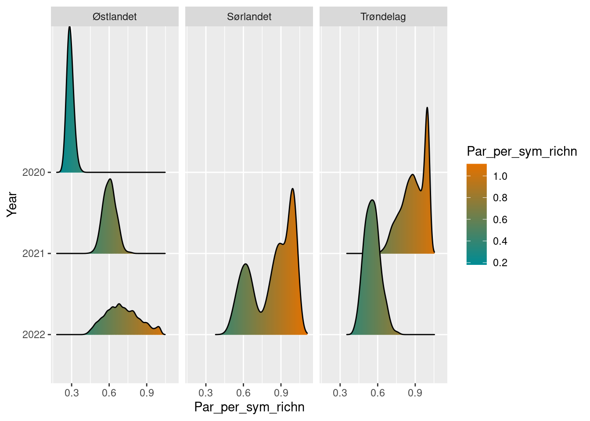
Prepare export format.
par_sym_sn_exp <- par_sym_sn_diff$bootstrap_summary
par_sym_sn_exp <- par_sym_sn_exp %>%
select(year,
region = region_name,
ind_value = boot_value,
ind_sd = boot_sd,
ind_lower2.5 = boot_lower2.5,
ind_upper97.5 = boot_upper97.5)
par_sym_sn_exp <- norway_reg_NorIns %>%
inner_join(par_sym_sn_exp,
by = c("region" = "region"),
multiple = "all")
par_sym_sn_exp## Simple feature collection with 6 features and 6 fields
## Geometry type: MULTIPOLYGON
## Dimension: XY
## Bounding box: xmin: -76208 ymin: 6450245 xmax: 468357.5 ymax: 7237323
## Projected CRS: ETRS89 / UTM zone 33N
## # A tibble: 6 × 7
## region geom year ind_v…¹ ind_sd ind_l…² ind_u…³
## <chr> <MULTIPOLYGON [m]> <int> <dbl> <dbl> <dbl> <dbl>
## 1 Sørlandet (((-31605 6513854, -31464 6513743, -31449 6513590, -32255 6512745, -32512 6512740, -... 2022 0.833 0.162 0.531 1
## 2 Trøndelag (((227783 7068646, 227876 7069284, 227998 7069292, 228247 7069134, 228869 7069030, 2... 2021 0.891 0.0944 0.691 1
## 3 Trøndelag (((227783 7068646, 227876 7069284, 227998 7069292, 228247 7069134, 228869 7069030, 2... 2022 0.557 0.0623 0.447 0.685
## 4 Østlandet (((179915 6537265, 180246 6536997, 180600 6536671, 181028 6536601, 181197 6536581, 1... 2020 0.289 0.0240 0.248 0.343
## 5 Østlandet (((179915 6537265, 180246 6536997, 180600 6536671, 181028 6536601, 181197 6536581, 1... 2021 0.603 0.0510 0.507 0.700
## 6 Østlandet (((179915 6537265, 180246 6536997, 180600 6536671, 181028 6536601, 181197 6536581, 1... 2022 0.705 0.132 0.474 0.991
## # … with abbreviated variable names ¹ind_value, ²ind_lower2.5, ³ind_upper97.51.8.4.5 Genetic diversity evenness of flying insects in semi-natural land
[This is not fully implemented yet. Need full COI sequence to calculate the true GDE]. This could also be done for a subset of species. (doi: https://doi.org/10.1101/2022.02.09.479762)
Fetch the data.
richness_sn <- get_observations(subset_year = 2020:2022,
subset_region = NULL)Calculate the indicator values for each region and year.
gde_sn_boot <- bootstrap_value(df = richness_sn,
value = GDE_by_asv,
groups = c("year",
"region_name")
)Compare to arbitrary reference value and normalize.
gde_sn_ref <- 0.7
gde_sn_diff <- gde_sn_boot / gde_sn_refPlot the results and display uncertainty.
gde_sn_diff## # A tibble: 6 × 6
## year region_name GDE_by_asv boot_sd boot_lower2.5 boot_upper97.5
## <int> <chr> <dbl> <dbl> <dbl> <dbl>
## 1 2020 Østlandet 0.871 0.0292 0.813 0.927
## 2 2021 Trøndelag 0.755 0.0245 0.704 0.801
## 3 2021 Østlandet 0.825 0.0181 0.789 0.86
## 4 2022 Sørlandet 0.810 0.0281 0.76 0.867
## 5 2022 Trøndelag 0.747 0.0221 0.704 0.793
## 6 2022 Østlandet 0.933 0.0153 0.901 0.961plot(gde_sn_diff)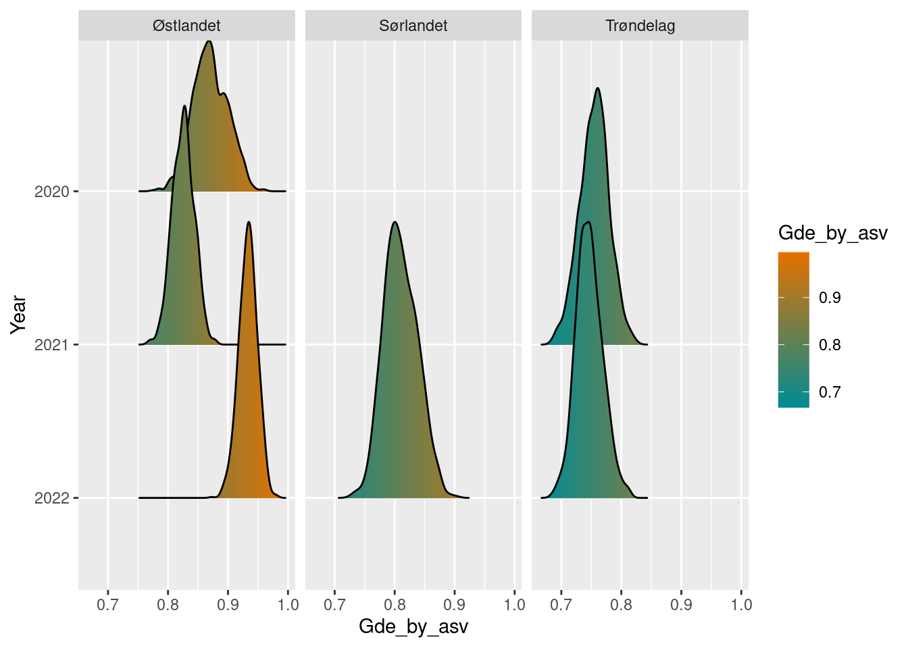
Prepare export format.
gde_sn_to_exp <- gde_sn_diff$bootstrap_summary
gde_sn_to_exp <- gde_sn_to_exp %>%
select(year,
region = region_name,
ind_value = boot_value,
ind_sd = boot_sd,
ind_lower2.5 = boot_lower2.5,
ind_upper97.5 = boot_upper97.5)
gde_sn_to_exp <- norway_reg_NorIns %>%
inner_join(gde_sn_to_exp,
by = c("region" = "region"),
multiple = "all")
gde_sn_to_exp## Simple feature collection with 6 features and 6 fields
## Geometry type: MULTIPOLYGON
## Dimension: XY
## Bounding box: xmin: -76208 ymin: 6450245 xmax: 468357.5 ymax: 7237323
## Projected CRS: ETRS89 / UTM zone 33N
## # A tibble: 6 × 7
## region geom year ind_v…¹ ind_sd ind_l…² ind_u…³
## <chr> <MULTIPOLYGON [m]> <int> <dbl> <dbl> <dbl> <dbl>
## 1 Sørlandet (((-31605 6513854, -31464 6513743, -31449 6513590, -32255 6512745, -32512 6512740, -... 2022 0.810 0.0281 0.76 0.867
## 2 Trøndelag (((227783 7068646, 227876 7069284, 227998 7069292, 228247 7069134, 228869 7069030, 2... 2021 0.755 0.0245 0.704 0.801
## 3 Trøndelag (((227783 7068646, 227876 7069284, 227998 7069292, 228247 7069134, 228869 7069030, 2... 2022 0.747 0.0221 0.704 0.793
## 4 Østlandet (((179915 6537265, 180246 6536997, 180600 6536671, 181028 6536601, 181197 6536581, 1... 2020 0.871 0.0292 0.813 0.927
## 5 Østlandet (((179915 6537265, 180246 6536997, 180600 6536671, 181028 6536601, 181197 6536581, 1... 2021 0.825 0.0181 0.789 0.86
## 6 Østlandet (((179915 6537265, 180246 6536997, 180600 6536671, 181028 6536601, 181197 6536581, 1... 2022 0.933 0.0153 0.901 0.961
## # … with abbreviated variable names ¹ind_value, ²ind_lower2.5, ³ind_upper97.51.8.5 Calculation of NBBM indicators
1.8.6 Bumblebees in open landscapes
require(bombLepiSurv)
humlesommerfConnect(host = "ninradardata01.nina.no")allBombusGressmark2022 <- getAllData(type = "bumblebees",
habitat = "gressmark",
year = 2022,
language = "norsk")
surveyBarplot(allBombusGressmark2022) #+Figure 1.1: Bumblebees in grasslands 2021
# ggtitle("Humler i gressmark 2021")nIter = 999
hInd2022TrondGress <- calcInd(type = "Humler",
region_short = "Trond",
habitat = "Gressmark",
year = 2022,
nIter = nIter,
save.draws = T)hInd2022SorGress <- calcInd(type = "Humler",
region_short = "Sor",
habitat = "Gressmark",
year = 2022,
nIter = nIter,
save.draws = T)hInd2022OstGress <- calcInd(type = "Humler",
region_short = "Ost",
habitat = "Gressmark",
year = 2022,
nIter = nIter,
save.draws = T)[Implement this]
hInd2022VestGress <- calcInd(type = "Humler",
region_short = "Vest",
habitat = "Gressmark",
year = 2022,
nIter = nIter,
save.draws = T)1.8.7 Butterflies in open landscapes
nIter = 999
sInd2022TrondGress <- calcInd(type = "Sommerfugl",
region_short = "Trond",
habitat = "Gressmark",
year = 2022,
nIter = nIter,
save.draws = T)sInd2022SorGress <- calcInd(type = "Sommerfugl",
region_short = "Sor",
habitat = "Gressmark",
year = 2022,
nIter = nIter,
save.draws = T)sInd2022OstGress <- calcInd(type = "Sommerfugl",
region_short = "Ost",
habitat = "Gressmark",
year = 2022,
nIter = nIter,
save.draws = T)[Implement this]
sInd2022VestGress <- calcInd(type = "Sommerfugl",
region_short = "Vest",
habitat = "Gressmark",
year = 2022,
nIter = nIter,
save.draws = T)The calculations for earlier years is already present as datasets in the R-package and can be fetched individually. Once this is done, we can plot the timeseries of values using the function indPlot.
Todo, put these in the new version of the package.
#load("out/IndicatorValues2020.Rdata")data("sInd2022VestGress")
data("sInd2022VestSkog")
data("sInd2022TrondGress")
data("sInd2022TrondSkog")
data("sInd2022OstGress")
data("sInd2022OstSkog")
data("sInd2022SorGress")
data("sInd2022SorSkog")
data("sInd2021TrondGress")
data("sInd2021TrondSkog")
data("sInd2021OstGress")
data("sInd2021OstSkog")
data("sInd2021SorGress")
data("sInd2021SorSkog")
data("sInd2020TrondGress")
data("sInd2020TrondSkog")
data("sInd2020OstGress")
data("sInd2020OstSkog")
data("sInd2020SorGress")
data("sInd2020SorSkog")
data("sInd2019TrondGress")
data("sInd2019TrondSkog")
data("sInd2019OstGress")
data("sInd2019OstSkog")
data("sInd2019SorGress")
data("sInd2019SorSkog")
data("sInd2018TrondGress")
data("sInd2018TrondSkog")
data("sInd2018OstGress")
data("sInd2018OstSkog")
data("sInd2018SorGress")
data("sInd2018SorSkog")
data("sInd2017TrondGress")
data("sInd2017TrondSkog")
data("sInd2017OstGress")
data("sInd2017OstSkog")
data("sInd2017SorGress")
data("sInd2017SorSkog")
data("sInd2016TrondGress")
data("sInd2016TrondSkog")
data("sInd2016OstGress")
data("sInd2016OstSkog")
data("sInd2016SorGress")
data("sInd2016SorSkog")
data("sInd2015TrondGress")
data("sInd2015TrondSkog")
data("sInd2015OstGress")
data("sInd2015OstSkog")
data("sInd2015SorGress")
data("sInd2015SorSkog")
data("sInd2014TrondGress")
data("sInd2014TrondSkog")
data("sInd2014OstGress")
data("sInd2014OstSkog")
data("sInd2014SorGress")
data("sInd2014SorSkog")
data("sInd2013TrondGress")
data("sInd2013TrondSkog")
data("sInd2013OstGress")
data("sInd2013OstSkog")
data("sInd2013SorGress")
data("sInd2013SorSkog")
data("sInd2012TrondGress")
data("sInd2012TrondSkog")
data("sInd2012OstGress")
data("sInd2012OstSkog")
data("sInd2011OstGress")
data("sInd2011OstSkog")
data("sInd2010OstGress")
data("sInd2010OstSkog")
data("sInd2009OstGress")
data("sInd2009OstSkog")
data("hInd2022VestGress")
data("hInd2022VestSkog")
data("hInd2022TrondGress")
data("hInd2022TrondSkog")
data("hInd2022OstGress")
data("hInd2022OstSkog")
data("hInd2022SorGress")
data("hInd2022SorSkog")
data("hInd2021TrondGress")
data("hInd2021TrondSkog")
data("hInd2021OstGress")
data("hInd2021OstSkog")
data("hInd2021SorGress")
data("hInd2021SorSkog")
data("hInd2020TrondGress")
data("hInd2020TrondSkog")
data("hInd2020OstGress")
data("hInd2020OstSkog")
data("hInd2020SorGress")
data("hInd2020SorSkog")
data("hInd2019TrondGress")
data("hInd2019TrondSkog")
data("hInd2019OstGress")
data("hInd2019OstSkog")
data("hInd2019SorGress")
data("hInd2019SorSkog")
data("hInd2018TrondGress")
data("hInd2018TrondSkog")
data("hInd2018OstGress")
data("hInd2018OstSkog")
data("hInd2018SorGress")
data("hInd2018SorSkog")
data("hInd2017TrondGress")
data("hInd2017TrondSkog")
data("hInd2017OstGress")
data("hInd2017OstSkog")
data("hInd2017SorGress")
data("hInd2017SorSkog")
data("hInd2016TrondGress")
data("hInd2016TrondSkog")
data("hInd2016OstGress")
data("hInd2016OstSkog")
data("hInd2016SorGress")
data("hInd2016SorSkog")
data("hInd2015TrondGress")
data("hInd2015TrondSkog")
data("hInd2015OstGress")
data("hInd2015OstSkog")
data("hInd2015SorGress")
data("hInd2015SorSkog")
data("hInd2014TrondGress")
data("hInd2014TrondSkog")
data("hInd2014OstGress")
data("hInd2014OstSkog")
data("hInd2014SorGress")
data("hInd2014SorSkog")
data("hInd2013TrondGress")
data("hInd2013TrondSkog")
data("hInd2013OstGress")
data("hInd2013OstSkog")
data("hInd2013SorGress")
data("hInd2013SorSkog")
data("hInd2012TrondGress")
data("hInd2012TrondSkog")
data("hInd2012OstGress")
data("hInd2012OstSkog")
data("hInd2011OstGress")
data("hInd2011OstSkog")
data("hInd2010OstGress")
data("hInd2010OstSkog")
data("hInd2009OstGress")
data("hInd2009OstSkog")hGressIndVals <- collectIndData(taxa = "bumblebees",
habitat = "gressmark",
years = 2009:2022)
indPlot(input = hGressIndVals,
confLevel = "95%",
lineWidth = 1,
dodge = 0.5,
pointSize = 4) +
ggtitle("Indicator values for bumblebees in semi-natural landscapes") +
scale_x_continuous(breaks = 2009:2022)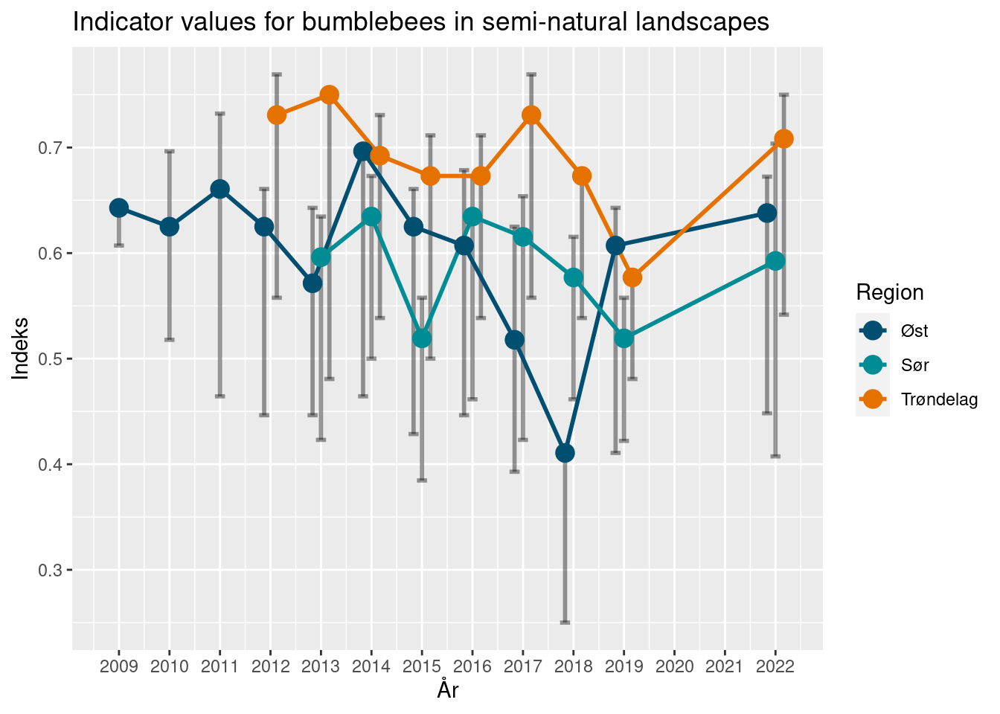
sGressIndVals <- collectIndData(taxa = "butterflies",
habitat = "gressmark",
years = 2009:2022)
indPlot(input = sGressIndVals,
confLevel = "95%",
lineWidth = 1,
dodge = 0.5,
pointSize = 4) +
ggtitle("Indicator values for butterflies in semi-natural landscapes") +
scale_x_continuous(breaks = 2009:2022)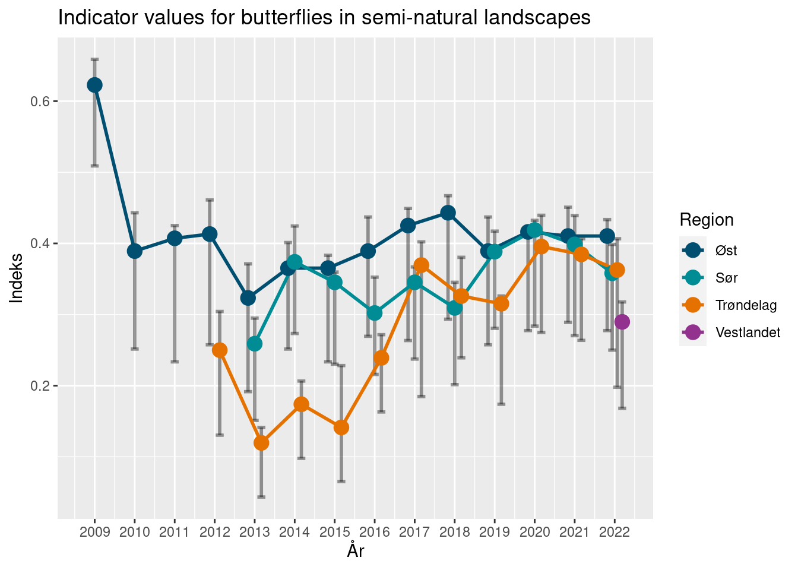